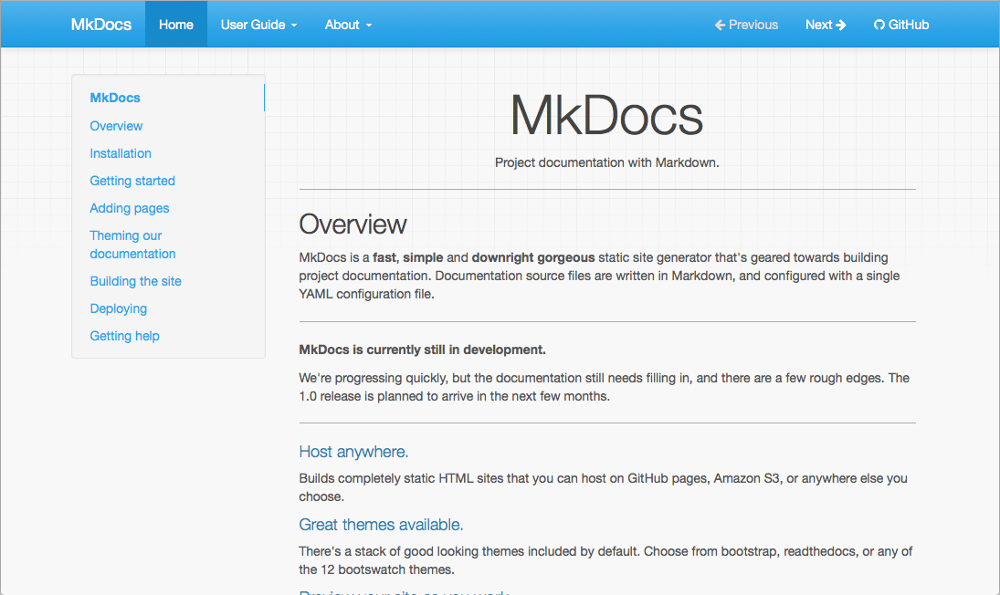

Styling your docs
How to style and theme your documentation.
MkDocs includes a couple built-in themes as well as various third party themes, all of which can easily be customized with extra CSS or JavaScript or overridden from the theme's custom_dir. You can also create your own custom theme from the ground up for your documentation.
To use a theme that is included in MkDocs, simply add this to your
mkdocs.yml config file.
theme: readthedocs
Replace readthedocs with any of the built-in themes listed below.
To create a new custom theme see the Custom Themes page, or to more heavily customize an existing theme, see the Customizing a Theme section below.
Built-in themes
mkdocs
The default theme, which was built as a custom Bootstrap theme, supports most every feature of MkDocs.

In addition to the default theme configuration options, the mkdocs theme
supports the following options:
-
highlightjs: Enables highlighting of source code in code blocks using the highlight.js JavaScript library. Default:True. -
hljs_style: The highlight.js library provides 79 different styles (color variations) for highlighting source code in code blocks. Set this to the name of the desired style. Default:github. -
hljs_languages: By default, highlight.js only supports 23 common languages. List additional languages here to include support for them.theme: name: mkdocs highlightjs: true hljs_languages: - yaml - rust -
shortcuts: Defines keyboard shortcut keys.theme: name: mkdocs shortcuts: help: 191 # ? next: 78 # n previous: 80 # p search: 83 # sAll values much be numeric key codes. It is best to use keys which are available on all keyboards. You may use https://keycode.info/ to determine the key code for a given key.
-
help: Display a help modal which lists the keyboard shortcuts. Default:191(?) -
next: Navigate to the "next" page. Default:78(n) -
previous: Navigate to the "previous" page. Default:80(p) -
search: Display the search modal. Default:83(s)
-
-
navigation_depth: The maximum depth of the navigation tree in the sidebar. Default:2. -
nav_style: This adjusts the visual style for the top navigation bar; by default, this is set toprimary(the default), but it can also be set todarkorlight.theme: name: mkdocs nav_style: dark
readthedocs
A clone of the default theme used by the Read the Docs service, which offers the same restricted feature-set as its parent theme. Like its parent theme, only two levels of navigation are supported.

In addition to the default theme configuration options, the readthedocs
theme supports the following options:
-
highlightjs: Enables highlighting of source code in code blocks using the highlight.js JavaScript library. Default:True. -
hljs_languages: By default, highlight.js only supports 23 common languages. List additional languages here to include support for them.theme: name: readthedocs highlightjs: true hljs_languages: - yaml - rust -
include_homepage_in_sidebar: Lists the homepage in the sidebar menu. As MkDocs requires that the homepage be listed in thenavconfiguration option, this setting allows the homepage to be included or excluded from the sidebar. Note that the site name/logo always links to the homepage. Default:True. -
prev_next_buttons_location: One ofbottom,top,both, ornone. Displays the “Next” and “Previous” buttons accordingly. Default:bottom. -
navigation_depth: The maximum depth of the navigation tree in the sidebar. Default:4. -
collapse_navigation: Only include the page section headers in the sidebar for the current page. Default:True. -
titles_only: Only include page titles in the sidebar, excluding all section headers for all pages. Default:False. -
sticky_navigation: If True, causes the sidebar to scroll with the main page content as you scroll the page. Default:True.
Third Party Themes
A list of third party themes can be found in the MkDocs community wiki. If you have created your own, please feel free to add it to the list.
Customizing a Theme
If you would like to make a few tweaks to an existing theme, there is no need to create your own theme from scratch. For minor tweaks which only require some CSS and/or JavaScript, you can use the docs_dir. However, for more complex customizations, including overriding templates, you will need to use the theme custom_dir setting.
Using the docs_dir
The extra_css and extra_javascript configuration options can be used to make tweaks and customizations to existing themes. To use these, you simply need to include either CSS or JavaScript files within your documentation directory.
For example, to change the colour of the headers in your documentation, create
a file called extra.css and place it next to the documentation Markdown. In
that file add the following CSS.
h1 {
color: red;
}
Note
If you are deploying your documentation with ReadTheDocs. You will need to explicitly list the CSS and JavaScript files you want to include in your config. To do this, add the following to your mkdocs.yml.
extra_css: [extra.css]
After making these changes, they should be visible when you run
mkdocs serve - if you already had this running, you should see that the CSS
changes were automatically picked up and the documentation will be updated.
Note
Any extra CSS or JavaScript files will be added to the generated HTML document after the page content. If you desire to include a JavaScript library, you may have better success including the library by using the theme custom_dir.
Using the theme custom_dir
The theme.custom_dir configuration option can be used to point to a directory
of files which override the files in a parent theme. The parent theme would be
the theme defined in the theme.name configuration option. Any file in the
custom_dir with the same name as a file in the parent theme will replace the
file of the same name in the parent theme. Any additional files in the
custom_dir will be added to the parent theme. The contents of the custom_dir
should mirror the directory structure of the parent theme. You may include
templates, JavaScript files, CSS files, images, fonts, or any other media
included in a theme.
Note
For this to work, the theme name setting must be set to a known installed theme.
If the name setting is instead set to null (or not defined), then there
is no theme to override and the contents of the custom_dir must be a
complete, standalone theme. See Custom Themes for more
information.
For example, the mkdocs theme (browse source), contains the following directory structure (in part):
- css\
- fonts\
- img\
- favicon.ico
- grid.png
- js\
- 404.html
- base.html
- content.html
- nav-sub.html
- nav.html
- toc.html
To override any of the files contained in that theme, create a new directory
next to your docs_dir:
mkdir custom_theme
And then point your mkdocs.yml configuration file at the new directory:
theme:
name: mkdocs
custom_dir: custom_theme/
To override the 404 error page ("file not found"), add a new template file named
404.html to the custom_theme directory. For information on what can be
included in a template, review the documentation for building a custom theme.
To override the favicon, you can add a new icon file at
custom_theme/img/favicon.ico.
To include a JavaScript library, copy the library to the custom_theme/js/
directory.
Your directory structure should now look like this:
- docs/
- index.html
- custom_theme/
- img/
- favicon.ico
- js/
- somelib.js
- 404.html
- config.yml
Note
Any files included in the parent theme (defined in name) but not included
in the custom_dir will still be utilized. The custom_dir will only
override/replace files in the parent theme. If you want to remove files, or
build a theme from scratch, then you should review the documentation for
building a custom theme.
Overriding Template Blocks
The built-in themes implement many of their parts inside template blocks which
can be individually overridden in the main.html template. Simply create a
main.html template file in your custom_dir and define replacement blocks
within that file. Just make sure that the main.html extends base.html. For
example, to alter the title of the MkDocs theme, your replacement main.html
template would contain the following:
{% extends "base.html" %}
{% block htmltitle %}
<title>Custom title goes here</title>
{% endblock %}
In the above example, the htmltitle block defined in your custom main.html file
will be used in place of the default htmltitle block defined in the parent theme.
You may re-define as many blocks as you desire, as long as those blocks are
defined in the parent. For example, you could replace the Google Analytics
script with one for a different service or replace the search feature with your
own. You will need to consult the parent theme you are using to determine what
blocks are available to override. The MkDocs and ReadTheDocs themes provide the
following blocks:
site_meta: Contains meta tags in the document head.htmltitle: Contains the page title in the document head.styles: Contains the link tags for stylesheets.libs: Contains the JavaScript libraries (jQuery, etc) included in the page header.scripts: Contains JavaScript scripts which should execute after a page loads.analytics: Contains the analytics script.extrahead: An empty block in the<head>to insert custom tags/scripts/etc.site_name: Contains the site name in the navigation bar.site_nav: Contains the site navigation in the navigation bar.search_button: Contains the search box in the navigation bar.next_prev: Contains the next and previous buttons in the navigation bar.repo: Contains the repository link in the navigation bar.content: Contains the page content and table of contents for the page.footer: Contains the page footer.
You may need to view the source template files to ensure your modifications will work with the structure of the site. See Template Variables for a list of variables you can use within your custom blocks. For a more complete explanation of blocks, consult the Jinja documentation.
Combining the custom_dir and Template Blocks
Adding a JavaScript library to the custom_dir will make it available, but
won't include it in the pages generated by MkDocs. Therefore, a link needs to
be added to the library from the HTML.
Starting the with directory structure above (truncated):
- docs/
- custom_theme/
- js/
- somelib.js
- config.yml
A link to the custom_theme/js/somelib.js file needs to be added to the
template. As somelib.js is a JavaScript library, it would logically go in the
libs block. However, a new libs block that only includes the new script will
replace the block defined in the parent template and any links to libraries in
the parent template will be removed. To avoid breaking the template, a
super block can be used with a call to super from within the block:
{% extends "base.html" %}
{% block libs %}
{{ super() }}
<script src="{{ base_url }}/js/somelib.js"></script>
{% endblock %}
Note that the base_url template variable was used to ensure that the link is always relative to the current page.
Now the generated pages will include links to the template provided libraries as
well as the library included in the custom_dir. The same would be required for
any additional CSS files included in the custom_dir.